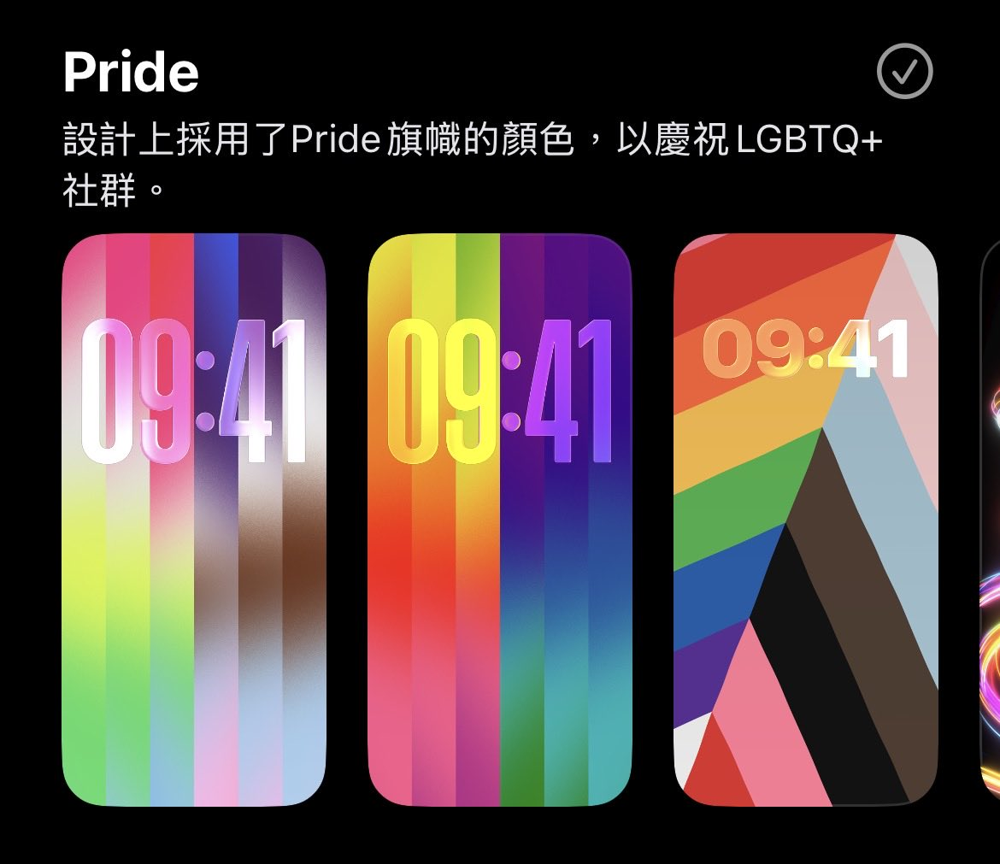
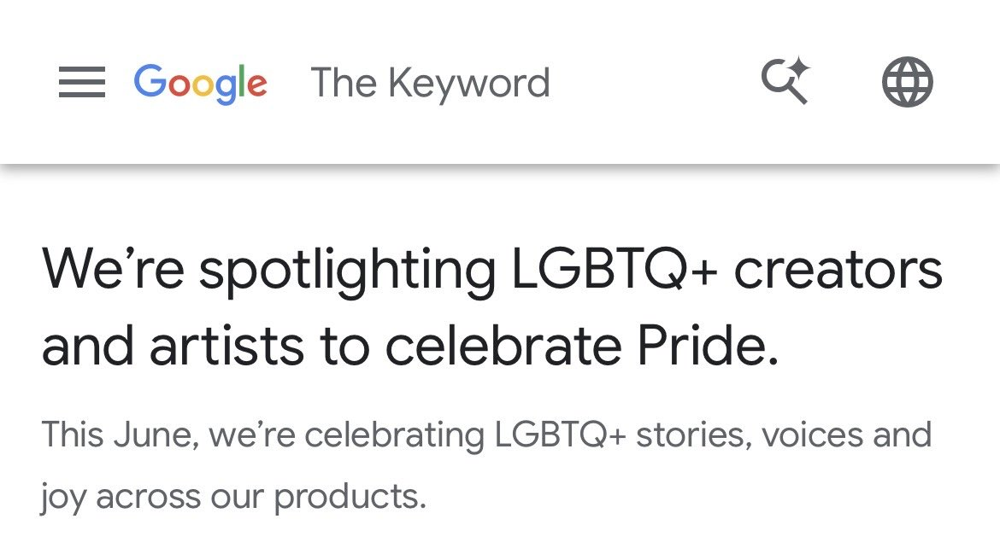
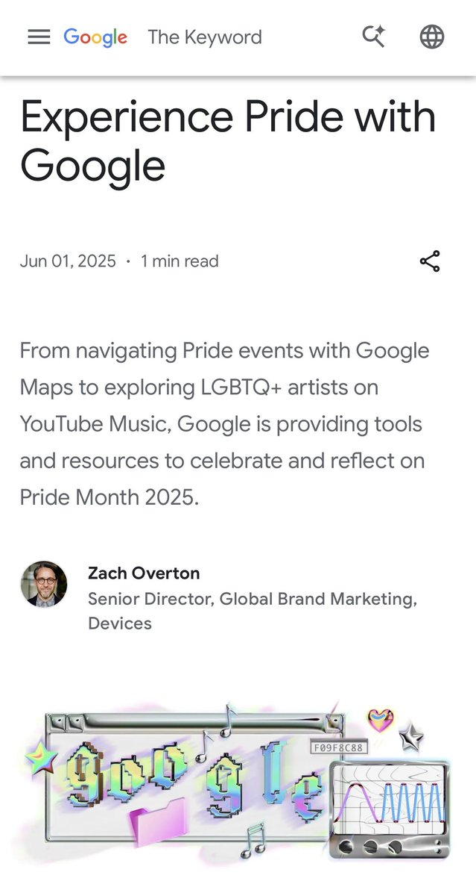

@Da81Secret @suanrongyouyuxu 这边建议阁下别买苹果或者安卓设备，别用Google搜索，别刷YouTube，别用GMS，毕竟你给这些产品贡献的钱/给他们提供的商业价值都有可能被用来宣传DEI，苹果现任CEO自己也是个同性恋；你还是买华为用纯血鸿蒙好，这样你的钱就不会用在DEI上面了




@suanrongyouyuxu 我花钱买游戏看动画，凭什么就DEI了。
好比我花钱买根哈根达斯，发现里面掺了雌二醇。
诶！我花钱叻。
要宣传DEI自己花钱宣传。干嘛把手伸进我的口袋。
另一个抽象鬼物，巨乳化，担心被审查定为未成年。
游戏女角色奶子屁股一个比一个大。
你说喜欢娇小苗条的角色，就有人说你恋童癖。
欧美人均有病？ https://t.co/utdxCfXv6U
好比我花钱买根哈根达斯，发现里面掺了雌二醇。
诶！我花钱叻。
要宣传DEI自己花钱宣传。干嘛把手伸进我的口袋。
另一个抽象鬼物，巨乳化，担心被审查定为未成年。
游戏女角色奶子屁股一个比一个大。
你说喜欢娇小苗条的角色，就有人说你恋童癖。
欧美人均有病？ https://t.co/utdxCfXv6U